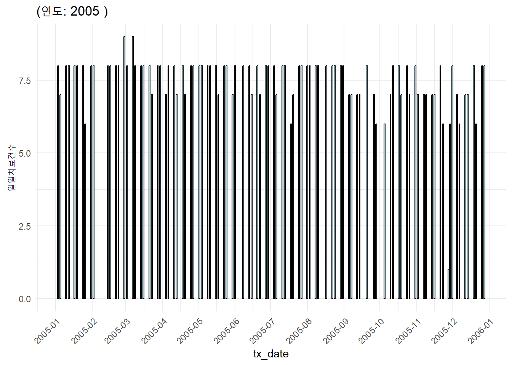
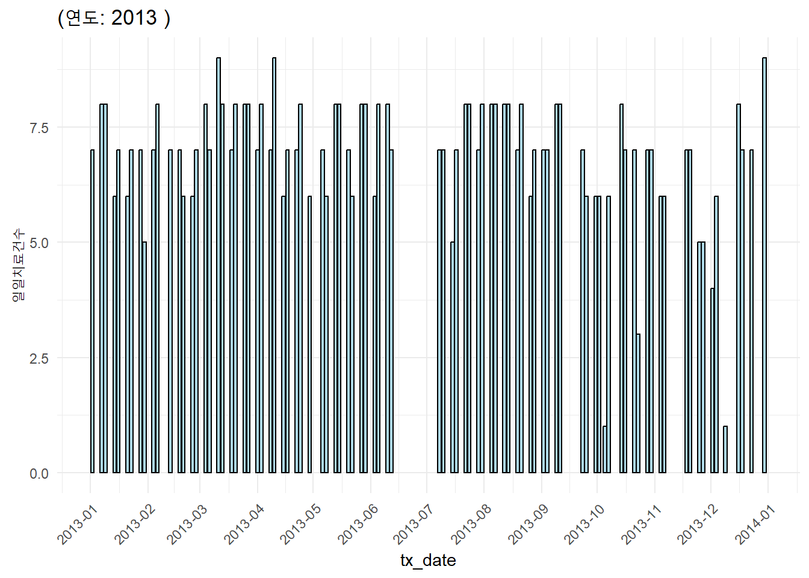
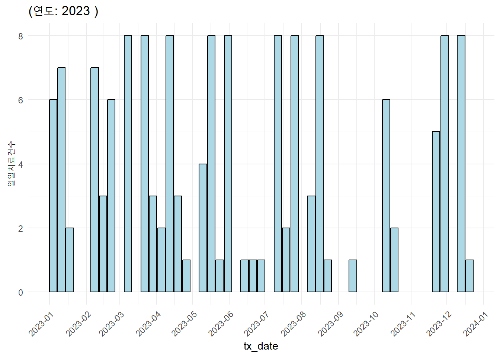
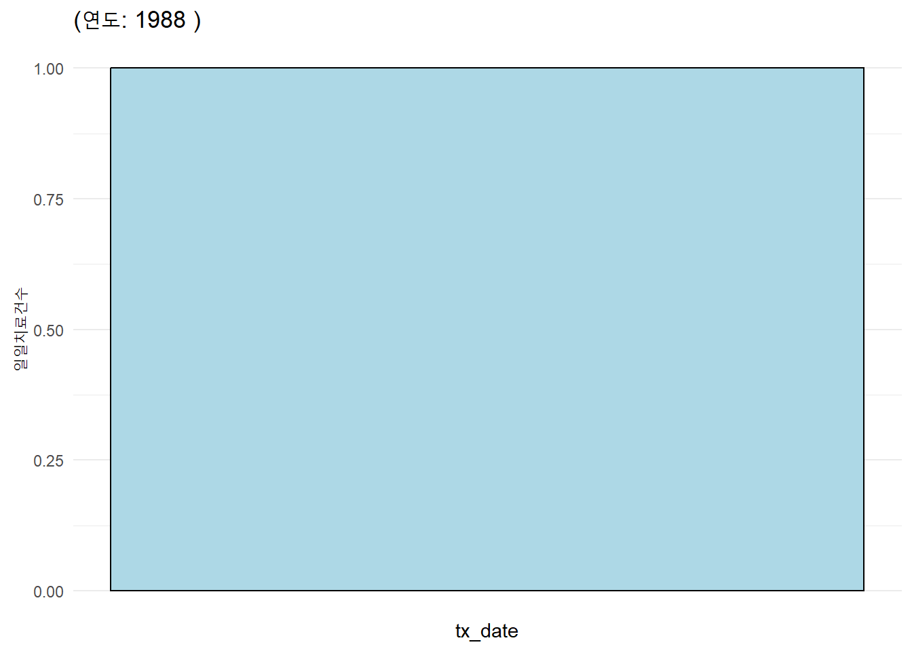
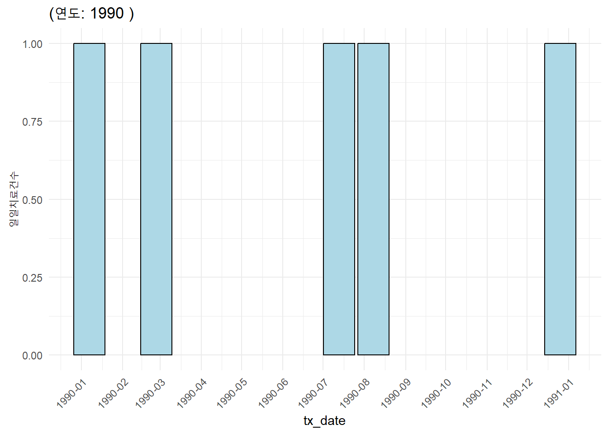

| Var1 | Freq |
|---|---|
| 금요일 | 120 |
| 월요일 | 5 |
I-131 치료 데이터베이스 만들기
데이터베이스를 만드는 과정 기록
Coding 원칙
상수명
- 영문대문자만 사용하여 변수명과 구별하였습니다.
테이블/변수명
- snake_case를 작명 원칙으로 하였습니다.
- 이는 PostgreSQL이 대소문자를 구별하지 않기 때문입니다.
- 데이터베이스와 무관하고 대문자를 사용하면 의미가 더 명확해지는 경우는 예외적으로 대문자를 사용하였습니다.
- 엑셀등에서 읽어들인 테이블 data는 _raw 접미사를 사용하였습니다.
- 마이닝에 의해 테이블 data의 레코드 수가 달라질 경우, 테이블의 명칭을 변경하였고, 전후에 갯수가 보존되었음을 검증하고자 노력했습니다.
OCS 자료
감마카메라실 판독소견
I-131 치료정보를 구하는 방법은 몇 가지가 있겠지만 저자는 판독소견조회메뉴에서 다운로드된 자료에서 추출하는 방식을 사용하였습니다.
핵의학체내/검사결과관리/판독소견조회 메뉴에서 접수일자를 설정하고 검사실을 감마카메라실로 설정하고 판독/미판독/전체 중 전체를 선택하여 진행합니다.
이 때 접수일자기간을 너무 길게 설정하면 오류가 나므로 3개월에서 6개월 정도가 적당해 보입니다. 그렇지만 특정분기에는 검사 건수가 많아 3개월 단위로 다운로드 하는 것이 제일 안전합니다.
조회가 완료되면 좌하측의 “조회내역출력”버튼을 누르면 화면에 검사내역이 보이며 우측하부의 페이지가 계속증가하는 것이 보입니다. 페이지가 증가되다가 멈추면, 좌측상부의 저장버튼을 눌러 저장하면 됩니다. csv 파일형식을 지원하지 않으므로 “Microsoft Excel 파일 (*.xls)로 진행하면 됩니다.
보고서 형식 유지는 불필요하므로 선택을 해제하고 진행하면 됩니다.
저장 후에는 마우스 우클릭으로 보안문서관리의 암호화해제를 해야 파일을 열어 볼 수 있습니다.
자료를 다운로드 받는 곳은 사전에 허락된 전산적으로 안전한 폴더에 해야 하면, 곧바로 암호를 설정하고, 익명화작업을 거친 자료를 만든 후 원본자료를 바로 영구삭제를 해야 합니다.
이글의 아래 부분들은 익명화작업이 완변히 진행되었다고 가정하고 설명을 합니다.
이글의 작성시점에서 다운로드된 자료의 개요는 아래와 같습니다.
- 기간: 2000-07-01 ~ 2024-12-31
- 총자료수: 301904
HD074 코드
I-131 치료 후 시행되는 치료스캔의 코드는 시간 경과에 따라 변해왔습니다. 최근에는 치료스캔의 향상된 수가를 반영하기 위해서 본원에서는
항목코드:
HD074항목명:
체내섭취평가 전신스캔 방법
을 특정시점부터 사용하고 있습니다. 그래서 감마카메라실 판독소견 다운로드된 자료 중에서 가장 최신 코드인 HD074 부터 우선 선별하고 검증을 진행하였습니다.
기간: 2024-01-12 ~ 2024-12-20
총 스캔수: 129
진료과 IM3인 4 례가 포함되어 있었으며, 이는 DOTATATE 및 PSMA 치료와 같은 타과와의 공동임상시험에서도 위의 치료스캔코드가 사용되어 발생하였하므로 이를 배제하기 위해 진료과==NM으로 한정하였을 때
진료과==NM인 스캔수: 125 였습니다.
현재는 I-131 치료스캔은 금요일에만 시행되므로, 시행요일들을 조사해보면 아래와 같았습니다.
월요일에 실시된 치료스캔들의 판독내용을 보면 Ra-223 치료스캔이거나 NM에서 시행된 DOTATATE 치료이므로 월요일 실시된 스캔들을 제외하고 진행하였습니다.
정리하면, HD074 코드사용한 I-131 치료스캔은 120 사례였습니다.
- 일일치료건수의 최대값은 9으로 가용한 핵의학과 격리 치료병실 수 범위 내 였습니다.
- 이를 도시하면 아래의 Figure 1 와 같습니다.
D43018 코드
- 항목코드
D43018은 항목명[131I] Whole Body Scan (Post Treatment)입니다. - 선별해보면
- 기간: 2003-03-26 ~ 2023-12-22
- 총건수: 8976 이었습니다.
- 전형적인 코드이므로 요일과 무관하게 당연히 I-131 치료스캔으로 판단됩니다.
- HD074와 처방기간의 중복도 없습니다.
- 오류점검에서
- 시행일별 최대건수는 9로 치료병실 가동범위 내입니다.
- 연도별 실시일별 횟수(=코드합계) 그래프는 아래와 같습니다.




D43019 코드
- 항목코드
D43019은 항목명[131I] Whole Body Scan (5mCi)입니다. - 선별해보면
- 기간: 2000-07-14 ~ 2021-01-06
- 총건수: 942 였습니다.
- 그 이전에도 이 코드는 사용되었지만 전산화가 되기 이전은 다운로드가 되지 않아서 최초 사용년도가 2000년도라 생각됩니다.
- 일부 샘플링을 해서 추정해보면 이 코드의 경우에서는 기간에 따라 사용목적이 달라졌다고 생각되는데
D43018이 최초사용일 2003-03-26 이전의 725 사례는 I-131 치료스캔으로 사용이되었다고 생각됩니다. 이후의 217 사례는 진단스캔으로 사용된 것으로 추정됩니다. - 일단은
D43018이전은 치료로 간주하고 이후는 사용목적이 불분명하지만 그 빈도가 높지 않으므로 I-131 diagnostic whole body scan으로 사용된 것으로 간주하고 진행하였습니다.
- 오류점검에서
- 시행일별 최대건수는 8로 치료병실 가동범위 내입니다.


D43020 코드 (x)
- 항목코드
D43020은 항목명[131I] Whole Body Scan (10mCi)입니다. - 진단스캔만으로 사용되었다 생각되어 치료스캔에 포함시키지 않았습니다.
tx_ocs로 통합
- D43019 자료는 이 코드의 최초사용일 2000-07-14로부터 D43018의 최초사용일인 2003-03-26까지만 통합에 사용하였습니다. 이는 725례에 해당합니다.
- D43018은 자료수 8976 그대로 통합하였고
- HD074도 자료수 120 그대로 통합하여
- 총자료수 9821 로 진행하였습니다. (이는 각각의 합인 9821고 일치합니다.
- D43019의 2001년 그래프를 보면 치료건수가 3월부터 약 20건으로 급증하여 이 것이 국가방사선비상진료센터 내의 격리치료병실이 가동되기 시작한 때로 추정되며, 치료환자의 분석시작 시점으로 설정하는 것도 향후 고려됩니다.
Access 데이터베이스
I-131 치료 정보
- 저자는 핵의학치료를 Access의
I-131 치료 정보테이블에 2014년7월9일까지 입력했었습니다.- 1988-04-26부터 2014-05-19까지
- 9535회의 핵의학치료가 입력되어 있습니다. (입력오류 검증 전)
- 연도별로 실시일별 횟수(치료건수)는 아래의 그래프들과 같다.



- 그래프를 보면 1988-04-26부터이지만, 1996년 이전은 간헐적으로 입력된 것으로 판단되므로, 경우에 따라서는 1996년부터 분석대상으로 하는 것이 고려될 수 있다.
OCS와 Access 병합
- Access 데이터베이스의 9535 건과 OCS 다운로드된 9821 건을 병합(full join)하면 12093 건이 되었습니다.
- 위 병합은 등록번호가 치료날짜가 같은 것을 기준으로 하였지만 입력된 날짜가 다를 수도 있으므로 날짜가 7일 이내의 차이를 보이면 중복된 것으로 판단할 때 440 건의 중복건을 제외하면
- 총 치료횟수는 11653 건이었습니다.
- 치료종류가
I-131 MIBG와RIT는 58 였고. - 이를 제외한 Radioactive Iodine Therapy는 11595 건 이었습니다.
EMR 관심환자
- 저자는 외래진료기록시 예후정보, 핵의학 치료정보, ATA response를 메타데이터화하여 관심환자에 등록해오고 있다. 타과장님의 환자가 저자의 환자가 된 경우로 등록해오고 있다.
- 비록 핵의학과 전체는 아니지만 single expert의 long-term follow up data이면서 치료 및 추적관찰 프로토콜에 일관성이 좋아 임상적인 의미를 도출할 수 있다고 생각한다.
tx_emr
- 엑셀파일로 다운로드하여 핵의학 치료기록만 추출하여 tx_emr로 구분하였다.
- 요약하면
- 기간: 1984-03-27 ~ 2024-11-20
- 치료횟수: 1821
- 여기에는 치료용량을 확인할 수 없었던 11례도 포함되어 있다.
- 연도별로 실시일별 룃수(치료건수)는 아래의 그패프들과 같습니다.


- 1990년이전의 등록된 연간치료건수는 적으며 그나마, 1990년부터의 등료건수 연 6회 이상임을 알 수 있습니다.
OCS+Access+EMR 치료병합
EMR에 등록된 치료 1821 중 I-131 MIBG 치료 1 례를 제외한 나머지 1820 자료를 앞서의 OCS+Access 병합자료 11595에 다시 병합(full join)하였습니다.
- 병합된 자료수는 11837였으며
- 위 병합은 pt_id와 tx_date가 같은 것으로 기준으로 하였으나 입력한 tx_date의 차이가 7일 이내면 날짜 입력 오류에 의한 중복으로 판단하였고,
- 이러한 중복은 86 례가 있었고,
- 중복이 되지 않도록 조정하였을 때, 치료는 11751 례 였습니다.
분석대상군의 결정
- OCS+Access+EMR 자료를 병합한 치료정보에서 환자정보를 추출해보면 환자수는 8580였습니다.
갑상선호르몬 처방통계
- 약품별 처방통계로부터 다운로드하여 followup date 결정에 사용하였습니다.
- (다운로드 가능했던) 처방기간은 1999-08-02부터 2025-01-17였습니다.
최소 추적관찰기간의 정의
- 앞서의 환자정보에 처방기록을 병합(left join)하여 patient_prescription 정보를 만들었습니다.
- 갑상선암 재발분석은 방사성요오드 치료 이후 재발여부에 대한 검사가 시행되는 것이 6~18개월인 점을 고려하여 2025-01-17로부터 548일 (약 18개월) 이전의 치료기록까지의 환자들 8414명을 분석대상에 포함하였습니다.
follow up loss의 정의
- 갑상선호르몬 처방기간이 400일까지 되고 있고, 일부 환자들에서 여분의 약을 이용하여 외래를 연기하는 것을 고려하여 다운로드된 가장 최근의 처방날짜 2025-01-17로부터 765일 이내에 처방기록이 없는 환자들을 follow up loss로 정의하였습니다.
미처방 환자의 분류
- 처방기록이 없는 환자의 분류
- 전체 미처방은 310건이었으며 처방기록은 1999-08-02부터이므로 치료기록이 이 이전인 사례는 174 건이었고, 이 이후의 사례는 136건 이었습니다.
- 이전인 사례는 follow up loss로 이후인 사례는 수탁환자로 분류하였습니다.
수탁환자의 정의
- Access의 수탁치료 기록은 모든 환자들에게 기록이 있는 것이 아니고 일부환자는 수탁치료 이후 본원에서 추적관찰을 하기 때문에 Access 이외의 방법을 고안하였습니다.
- 3회 이내의 치료이면서, 마지막 치료와 마지막 처방이 6개월 이내이면서, 최근 400일 이내에서 처방기록이 없는 환자를 수탁환자로 정의하였습니다.
최종적인 분류
- 치료를 받았던 환자들은 총 8414명이었고
- 위 정의에 따른 수탁환자는 2987명이었이었으며
- 따라서 일차 분석대상환자군은 5427명이였습니다.
- 일차분석 대상화자군 중 follow up loss는 2357명으로 loss rate는 43% 였습니다.
- 일차분석대상군 중 저자가 관심환자로 등록한 환자들은 1333명이었고, 이 환자군을 대상으로 생존분석을 시행하고자 하였습니다.
setnames(px, old="highest_stage_histology", "histology")
setnames(px, old="pT_size", "size")
setnames(px, old="pT_subtype", "subtype")
setnames(px, old="operator", "surgeon")
px[surgeon=="CIIJ", surgeon := "CIJ"]
px[surgeon=="LGJ", surgeon := "LGH"]
px[surgeon=="LNC", surgeon := "LMC"]
px[surgeon %in% c("NOC", "NUC", "NWC", "KHA", "MNM", "KST"), surgeon := "GS"]
px[str_detect(surgeon,"GS"), surgeon := "GS"]
px[str_detect(surgeon,"cND"), surgeon := "LGH"]
px[str_detect(surgeon,"sND"), surgeon := "CIJ"]
px[is.na(surgeon), surgeon := "KCCH"]
px[str_detect(surgeon,"@"), surgeon := "outside"]
px_is_na_multiplicity <- px[is.na(Multiplicity),]
px <- px[!is.na(Multiplicity),]
px_is_na_pN <- px[is.na(pN),]
px <- px[!is.na(pN),]
px[is.na(subtype), subtype := "conventional"]
px[str_detect(subtype,"conver"), subtype := "conventional"]
px[str_detect(subtype,"mini"), subtype := "minimally_invasive"]
px <- px[!str_detect(subtype, "unknown"),]
px[str_detect(subtype,"follicullar"), subtype := "follicular"]
px[str_detect(subtype,"diffuse"), subtype := "diffuse_sclerosing"]
px[str_detect(subtype,"encap"), subtype := "encapsulated_angioinvasive"]
px[str_detect(subtype,"oxiphilic"), subtype := "oncocytic"]
px[is.na(M), M := "M0"]
px[str_detect(histology,"Mixed"), histology := "Mixed"]
px_is_blank_pT <- px[pT=="",]
px <- px[!(pT=="" & is.na(size)),]
px[pT=="", pT := "T1b"]
px[pT=="T1" & size <=1, pT := "T1a"]
px <- px[!(pT=="T3" & is.na(size)),]
px[pT=="T1" & size >1, pT := "T1b"]
px[str_detect(pT,"1a"), pT := "T1a"]
px[str_detect(pT,"1b|`b"), pT := "T1b"]
px[str_detect(pT,"3b"), pT := "T3b"]
px[pT=="T3", pT := "T3a"]
px_is_na_size <- px[is.na(size),]
px[str_detect(pN,"N0"), pN := "N0"]
px[str_detect(pN,"1a|Na1"), pN := "N1a"]
px[str_detect(pN,"1b"), pN := "N1b"]
px[pN=="N1"&size==1, pN := "N1b"]
px[pN=="N1", pN := "N1a"]
px <- px[pN!="N?",]
px <- px[M!="M1",]
# `+`가 존재하면 앞의 값만 추출, 아니면 그대로 유지
px[, subtype := fifelse(str_detect(subtype, "\\+"),
str_extract(subtype, "^[^+]+"),
subtype)]
px[, op_year := year(op_date)]
px[, recur := as.factor(recur)]
px <-my_deidentify_pt_id(px, "pt_id")
px <- px[,.(pt_id, age, sex, op_year, surgeon, Thyroidectomy_Type, ND_Type,Risk, histology, subtype, pT, size, Multiplicity, ETE, gross_ETE, pN, ENE, time, recur)]mytable(px)
Descriptive Statistics
—————————————————————————————————————————————————————————————————————————
Mean ± SD or % N Missing (%)
—————————————————————————————————————————————————————————————————————————
pt_id unique values 1179 1180 0 ( 0.0%)
age 47.8 ± 11.1 1180 0 ( 0.0%)
sex 1180 0 ( 0.0%)
- F 934 (79.2%)
- M 246 (20.8%)
op_year 2011.9 ± 5.5 1180 0 ( 0.0%)
surgeon 1180 0 ( 0.0%)
- CIJ 73 (6.2%)
- GS 22 (1.9%)
- KCCH 63 (5.3%)
- LBC 110 (9.3%)
- LGH 476 (40.3%)
- LMC 234 (19.8%)
- LYS 30 (2.5%)
- OKK 6 (0.5%)
- outside 86 (7.3%)
- SYS 80 (6.8%)
Thyroidectomy_Type 1180 0 ( 0.0%)
- Lobectomy_Completion 67 (5.7%)
- TT 1113 (94.3%)
ND_Type 1180 0 ( 0.0%)
- CND 878 (74.4%)
- FND 11 (0.9%)
- mRND 3 (0.3%)
- ND 86 (7.3%)
- Not Done 41 (3.5%)
- Picking 8 (0.7%)
- SND 153 (13.0%)
Risk 1180 0 ( 0.0%)
- High 212 (18.0%)
- Intermediate 578 (49.0%)
- Low 390 (33.1%)
histology 1180 0 ( 0.0%)
- FTC 24 (2.0%)
- HTC 3 (0.3%)
- Mixed 1 (0.1%)
- PDTC 2 (0.2%)
- PTC 1150 (97.5%)
subtype 1180 0 ( 0.0%)
- clear_cell 1 (0.1%)
- conventional 1061 (89.9%)
- cribriform-morular 1 (0.1%)
- diffuse_sclerosing 8 (0.7%)
- encapsulated_angioinvasive 4 (0.3%)
- follicular 60 (5.1%)
- minimally_invasive 20 (1.7%)
- oncocytic 3 (0.3%)
- poorly_differentiated 1 (0.1%)
- solid 3 (0.3%)
- tall_cell 17 (1.4%)
- widely_invasive 1 (0.1%)
pT 1180 0 ( 0.0%)
- T1a 499 (42.3%)
- T1b 415 (35.2%)
- T2 134 (11.4%)
- T3a 30 (2.5%)
- T3b 65 (5.5%)
- T4a 36 (3.1%)
- T4b 1 (0.1%)
size 1.4 ± 1.0 1180 0 ( 0.0%)
Multiplicity 1180 0 ( 0.0%)
- Multiple 614 (52.0%)
- Single 566 (48.0%)
ETE 1180 0 ( 0.0%)
- N 377 (31.9%)
- Y 803 (68.1%)
gross_ETE 1180 0 ( 0.0%)
- N 1084 (91.9%)
- Y 96 (8.1%)
pN 1180 0 ( 0.0%)
- N0 344 (29.2%)
- N1a 538 (45.6%)
- N1b 236 (20.0%)
- Nx 62 (5.3%)
ENE 1180 0 ( 0.0%)
- N 1049 (88.9%)
- Y 131 (11.1%)
time 137.1 ± 68.3 1180 0 ( 0.0%)
recur 1180 0 ( 0.0%)
- FALSE 1097 (93.0%)
- TRUE 83 (7.0%)
————————————————————————————————————————————————————————————————————————— saveRDS(px,"C:/Projects/R441-Survival_Exercise/deidentified_data/rai_recur.rds")